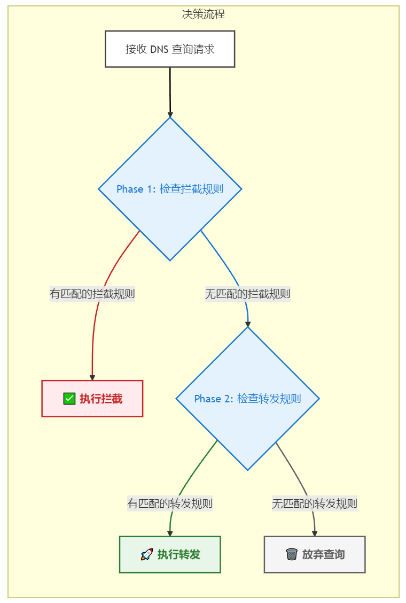

智能路由机制¶
智能路由是 Load Ants 最强大、最灵活的功能。它允许你像交通指挥官一样，根据预设的规则，精准地控制每一个 DNS 查询的去向。
路由的核心：拦截优先，分层匹配¶
Load Ants 的路由引擎遵循一个核心原则：拦截优先 (block first)。
当一个 DNS 查询进入时，Load Ants 会首先用所有拦截规则进行匹配。只有在没有任何拦截规则命中的情况下，它才会继续用转发规则 (forward) 进行匹配。
在"拦截"和"转发"这两个大的阶段内部，各自遵循着相同的匹配优先级：
- 精确匹配 (
exact): 最高优先级。 - 通配符匹配 (
wildcard): 次高优先级。 - 正则匹配 (
regex): 较低优先级。 - 全局通配符 (
*): 最低优先级。
决策流程图¶
下面的流程图直观地展示了 Load Ants 的两阶段路由决策过程：

✨ 最佳实践: 强烈建议在配置的最后，始终保留一条全局通配符的转发规则 (
match: "wildcard", patterns: ["*"], action: "forward", target: "...") 作为默认的"最终去向"，以确保所有查询都有一个明确的处理方式。
规则详解与场景化示例¶
1. 精确匹配 (exact)¶
- 用途: 针对特定域名进行操作。
- 示例: 拦截一个已知的广告域名。
static_rules:
- match: "exact"
patterns: ["ads.example.com"]
action: "block"
在这个例子中，只有对 ads.example.com 的查询会被直接拦截，而对 www.example.com 的查询则不受影响。
2. 通配符匹配 (wildcard)¶
- 用途: 针对某一域名下的所有子域名进行操作。
- 示例: 将所有公司内部域名转发到特定的上游组。
static_rules:
- match: "wildcard"
patterns: ["*.my-company.internal"]
action: "forward"
target: "internal_dns_group"
在这个例子中，对 dev.my-company.internal 的查询都会被转发到 internal_dns_group。
3. 正则表达式匹配 (regex)¶
- 用途: 进行最复杂、最灵活的域名匹配。
- 示例: 将所有 Google 相关服务的域名都转发到指定的"谷歌公共"上游组。
static_rules:
- match: "regex"
patterns: ["^(.*\.)?google\.com$"]
action: "forward"
target: "google_public"
这个正则表达式 ^(.*\.)?google\.com$ 会匹配 google.com 以及它所有的子域名。
关于远程规则 (remote_rules)¶
除了在本地 config.yaml 中定义静态规则，Load Ants 还支持从外部 URL 加载远程规则列表。这是一种非常强大的功能，有几点需要特别说明：
-
无缝整合: 远程规则不是一种新的匹配类型。它们在被下载和解析后，会根据其内容的格式（精确域名、通配符域名等）被无缝地整合进上述的路由匹配引擎中，并严格遵循"拦截优先、分层匹配"的逻辑。一个来自远程列表的精确匹配
block规则，其优先级会高于本地配置的通配符forward规则。 -
当前支持的格式:
type: 目前仅支持url，表示规则来源是一个 URL。format: 目前仅支持v2ray格式的规则列表（例如reject-list.txt,proxy-list.txt）。
-
未来计划: > 正如项目
README中所提及，未来可能会增加对更多流行规则格式（如clash）的支持，以进一步增强灵活性和兼容性。
一个远程规则的配置示例如下：
remote_rules:
- type: "url"
url: "https://raw.githubusercontent.com/Loyalsoldier/v2ray-rules-dat/release/reject-list.txt"
format: "v2ray"
action: "block"
这个配置会下载一个域名列表，并将列表中的所有域名作为 block 规则添加到路由引擎中。